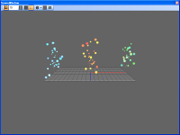
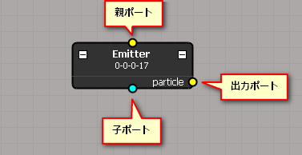
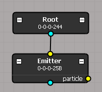
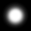
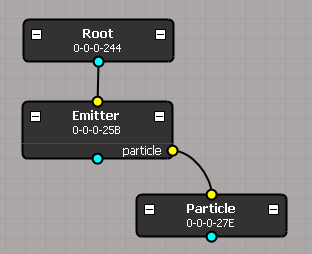
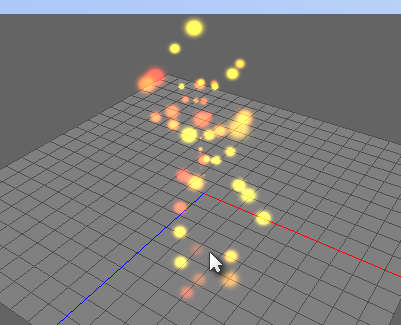
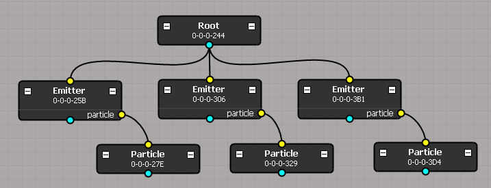

チュートリアル Emitter1
このチュートリアルでは、基本となるノードの作成や接続、そして、エミッタノードとパーティクルノードを使用してエフェクトを作成します。

エミッタノードを作成
パーティクルを生成するエミッタノードを作成します。
エミッタノードを作成するにはツールボックスから Emitter をスケマティック上にドラッグ＆ドロップする、もしくは右クリックから作成できます。
エミッタノードを作成したら、作成したエミッタノードを選択します。そうすると Inspector ウィンドウにアトリビュートが表示されるので、generateパネルの生成数を30に設定します。
エミッタノードとルートノードを接続するには、ルートノードの下にある青く丸い部分を左クリックしながらドラッグし、エミッタノードの上にある黄色く丸い部分にドロップします。
この丸い部分のことをポートといい、ノードの上にあるポートを親ポート、下にあるポートを子ポート、ノードの右側にあるポートを出力ポートといいます。

ルートノードとエミッタノードを接続した状態:

パーティクルノードを作成
エミッタが作成するパーティクルを設定します。
エミッタノード同様にパーティクルノードを作成します。
そして、パーティクルのアトリビュートを以下のように設定します。
- Basic の 寿命 を 40 に設定。
- Basic の 消滅時間 を 10 に設定。
- Translation の 速度X を -1, 1 に設定。
- Translation の 速度Y を 5, 10 に設定。
- Translation の 速度Z を -1, 1 に設定。
- Translation の 加速度Y を -9.8 に設定。
- Size の サイズX を 0 に設定。
- Size の サイズY を 0 に設定。
- Size の 速度X を 0.5 に設定。
- Size の 速度Y を 0.5 に設定。
- Color の R を 1 に設定。
- Color の G を 0, 1 に設定。
- Color の B を 0 に設定。
次に、テクスチャの設定をします。
下の画像を Texture パネルの ファイル名 の下にある四角いボックスにドラッグ＆ドロップします。

最後にエミッタノードとパーティクルノードを接続します。
エミッタノードのparticleポートとパーティクルノードの親ポートを接続します。
エミッタノードとパーティクルノードを接続した状態:

この状態で再生してみると下の写真のようになります。
再生するには Ctrl + Space もしくは Ctrl + Enter を押す、または、PlayController から再生ボタンを押します。

エミッタを増やす
作成したエミッタノードとパーティクルノードをコピーして、さらに２つのエミッタを増やしてみます。
エミッタノードとパーティクルノードを選択（左クリックしながらドラッグで矩形選択が出来ます）した状態で、Ctrl + C もしくは、ツールバーからコピーを選択します。
カーソルを貼り付け先に移動して Ctrl + V、もしくはツールバーから貼り付けします。
新しいエミッタノードとパーティクルノードが作成されますので、もう一度同じ操作をします。
複製した２つのエミッタノードをルートノードに接続します。

最後に複製したパーティクルノードのアトリビュートをそれぞれ以下のように設定します。
- Translation の 位置X を 5
- ColorR を 0.5, 0
- ColorG を 1, 0.5
- ColorB を 0.5, 0
- Translation の 位置X を -5
- Color のR を 0.5, 0
- Color のG を 1, 0.5
- Color のB を 1
再生してみます。下の写真のように表示されたか確認してみてください。
どうですか？
これでエフェクト完成です。おめでとうございます。
今回使用したエミッタノードやパーティクルノード以外に、ストライプノードや、変化をつけるモディファイア、フィールドノードといった様々なものがありますので、自由に組み合わせてみてください。
詳しくはマニュアルを参照してください。